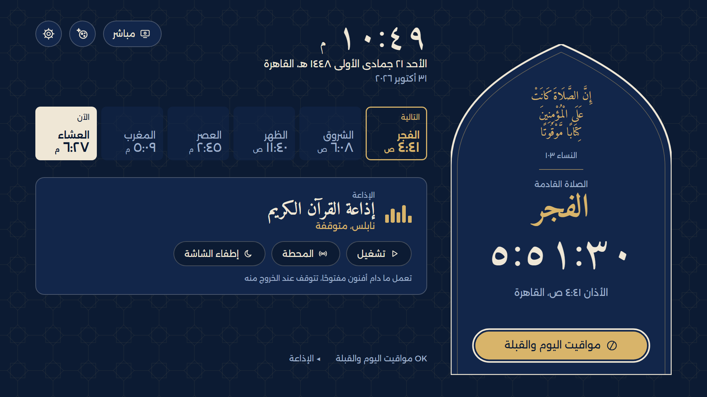
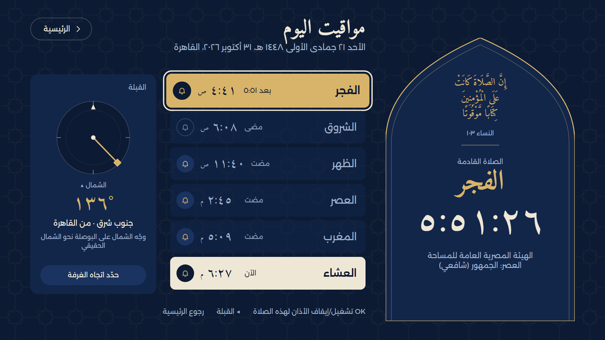
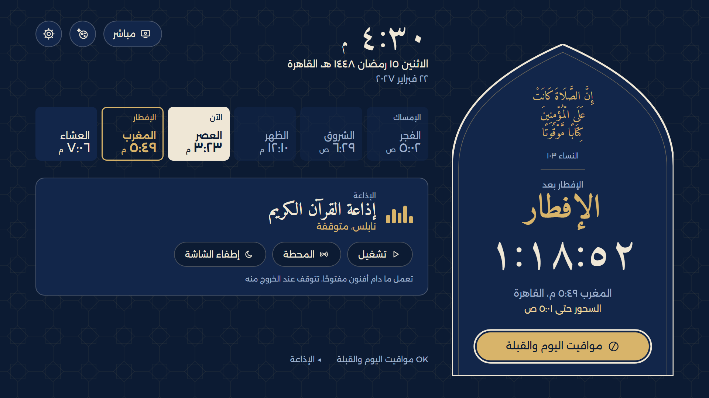
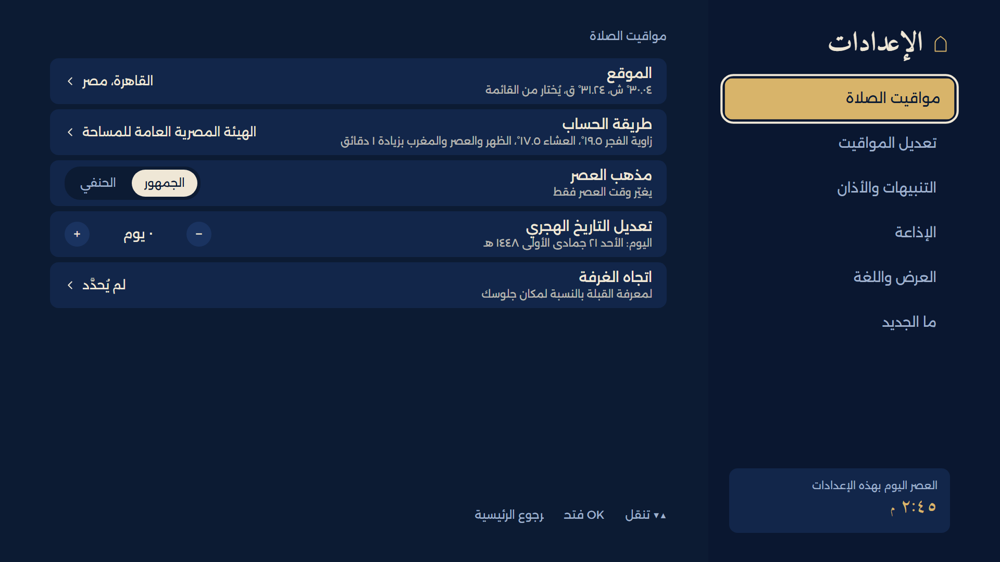
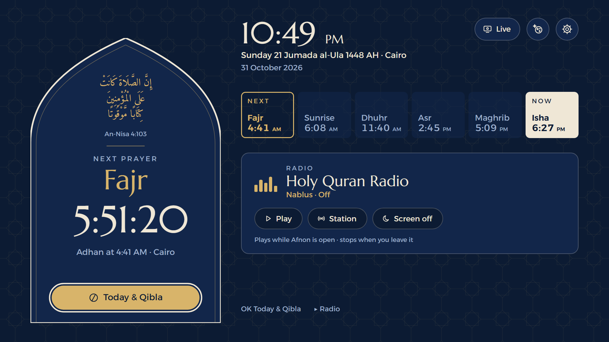

App ID tv.afnon.lg · version 1.0.1 · web app for webOS 5 (2020) and later · 1920×1080 ·
maintained by alequab (github.com/alequab/afnon-webos)
1. What the app is
A prayer-times app for Muslims. It shows the next prayer with a countdown, the day's six prayer times,
the Hijri and Gregorian dates and the Qibla, plays the adhan (call to prayer) at prayer time, and gives
reminders before each prayer. It also has Quran radio and live video from Makkah and Madinah.
Arabic (right to left) is the main language; English is the other.
Log-in
None. No accounts, no test account needed.
In-app purchase
None. The app is free.
In-app ads
None.
Personal data
None collected or shared. Settings stay on the TV. Privacy policy:
github.com/alequab/afnon-webos/blob/main/PRIVACY.md
Internet
Not needed for the prayer times (calculated on the TV). Used only by the radio,
the live video, and a daily check of the store's version number.
Background service
tv.afnon.lg.service schedules the next adhan and reminder with the
Activity Manager, so they come even when the app is closed.
2. Remote keys
Key
What it does
Arrows
Move the focus (gold ring) between buttons, prayer cells and rows.
OK
Opens or presses the focused item. In Settings: OK starts editing a row, OK again saves
it ("Saved" mark).
Back
Goes back one screen; in Settings while editing, cancels the change. On Home it closes
the app.
Magic Remote pointer
Pointing and clicking works on every button and row.
3. Screens and flows
3.1 Home (first screen)

Home in Arabic. Right: the next prayer and its countdown inside the mihrab arch, with the
"Today & Qibla" button. Top: clock, Hijri and Gregorian date, city; buttons Live, Night mode, Settings.
Middle: the six prayer times (next one outlined in gold, current one filled). Below: the radio panel
(Play, Station, Screen off).
Flow: the app opens on Home. OK on "Today & Qibla" opens 3.2. OK on Live plays Makkah at once in
a panel on Home; the buttons under the video switch to Madinah, open full screen and choose the quality. Radio: Play starts the
selected station, Station picks another, Screen off shows a black screen while the radio plays (any key
returns).
3.2 Today & Qibla

The day's times with a bell per prayer (OK turns that prayer's adhan on or off), and the Qibla
compass from the chosen city. "Set the room's direction" lets the user say which way the TV faces once, so
the Qibla is shown relative to where they sit. Back returns to Home.
3.3 Ramadan

In Ramadan, Home counts down to iftar (Maghrib) and shows the end of suhoor; Fajr is labelled
"Imsak". On Fridays, Dhuhr becomes Jumu'ah.
3.4 Settings

Settings, six sections on the right: Prayer times (city, calculation method, Asr school, Hijri
adjustment, room direction), Adjust the times (each time by minutes), Reminders & adhan, Radio, Display
& language, What's new. Up/Down choose a row, OK edits, OK saves.
First use: choose the city in Settings → Prayer times → Location (region, then country, then city;
192 cities). The calculation method and Asr school follow the city and can be changed.
3.5 English

Home in English (Settings → Display & language). The layout mirrors to left-to-right.
4. Adhan and reminders (also while the app is closed)
Adhan: at each prayer time whose bell is on, the app opens by itself over whatever is on screen
(another app or an HDMI input) and plays the adhan with the prayer's name on screen. OK on its button or
Back stops it and returns to what was on before; otherwise it closes by itself after the adhan.
Reminder: 5, 10, 15, 20 or 30 minutes before a prayer (Settings → Reminders & adhan), a
TV notification appears and, if chosen, a short spoken line ("It is now time for the Asr prayer").
Time ending: optionally, a spoken warning shortly before the current prayer's time ends.
How to test the adhan quickly
Settings → Prayer times → Location: pick a city whose next prayer is a few minutes away, or
Settings → Adjust the times: move the next prayer earlier or later by up to 30 minutes so that it falls
one or two minutes from now. The row shows the adjusted time at once.
Press Home or open another app. At that minute the adhan screen opens over it and the adhan plays.
5. Updates
Once a day the app reads a small file with the version number published in the LG Content Store. When a
newer version exists, a gold dot appears on Settings and What's new, and OK on the line there opens the LG
Content Store. The app never downloads or installs anything itself.
6. Notes
After a power cut, the times are hidden until the TV's clock is set (a message says so), so a wrong
clock never gives wrong prayer times.
The live video comes from Aloula (Saudi Broadcasting Authority) and the radio from public Quran radio
streams; both need the internet and may vary with the network.